Games
Video games represent a paradigm shift in modern media, transforming storytelling from a passive viewing experience into an interactive journey. Here, the audience becomes the protagonist, navigating the plot and confronting the weight of their own decisions. This active participation elevates every emotional beat; the struggles, the joy, and the tears are no longer just felt by a character on a screen, but are directly experienced by the player, creating an unparalleled level of narrative empathy.
Wuxia Stickman
On the surface, Wuxia Stickman is a classic run-and-jump game where the protagonist must overcome obstacles to claim a mysterious martial arts guidance book. Beneath this simple setup, however, lies a deliberate commentary on modern digital culture—and the story definitely doesn’t stop there.
Play Game
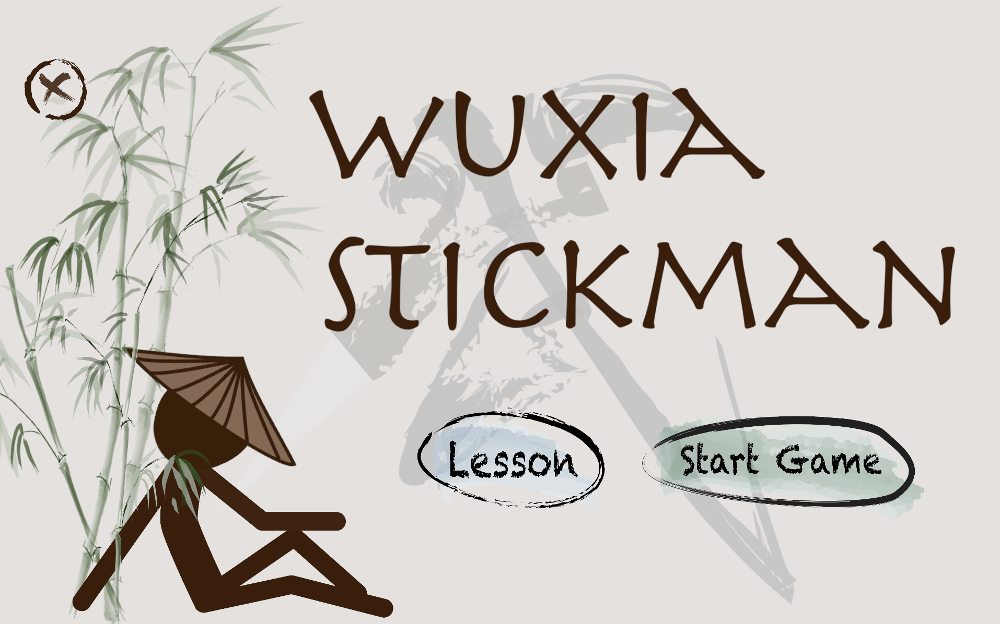
As players begin the challenge, they will quickly realize the frustration of controlling the character's movements. Having players fail in their first few tries is entirely part of my intention. In our digital world, everything seems to become easier and easier; the process of gaining knowledge, joy, and relationships takes lower costs than at any time in history. This game captures the true Wuxia spirit by bringing the real-world hardships and friction we usually avoid back onto the screen. By forcing players to slow down and exert genuine effort, the project poses a question: will people still enjoy the game, or will they turn away and leave? If we become completely used to an effortless lifestyle in the digital world, what will happen when we face reality?
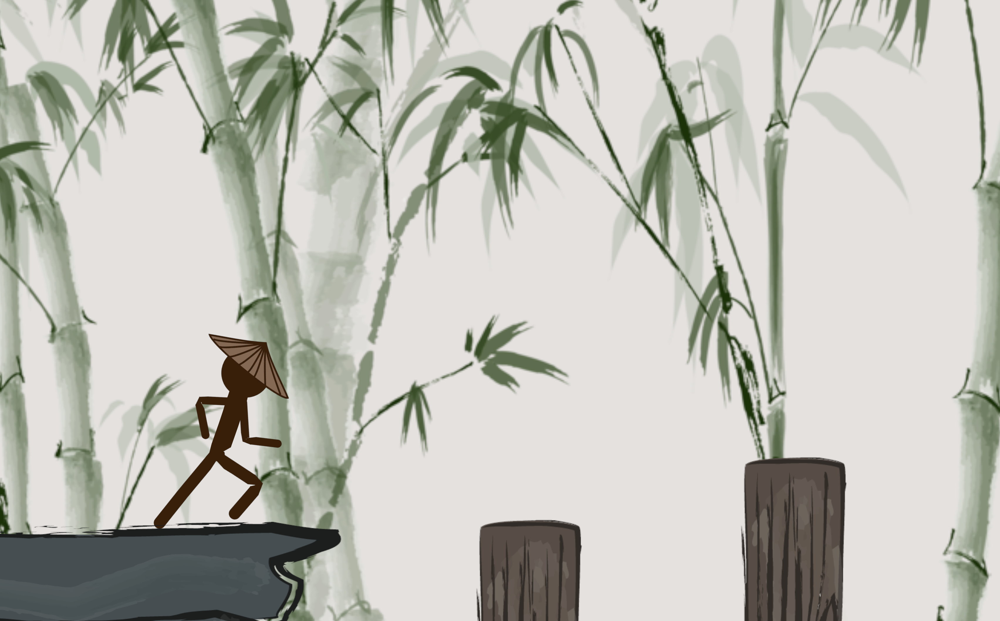
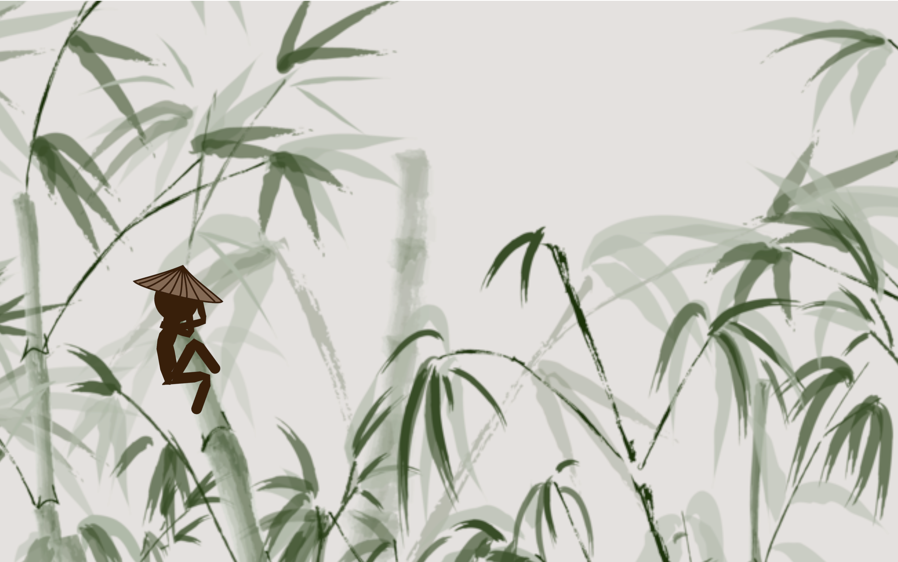
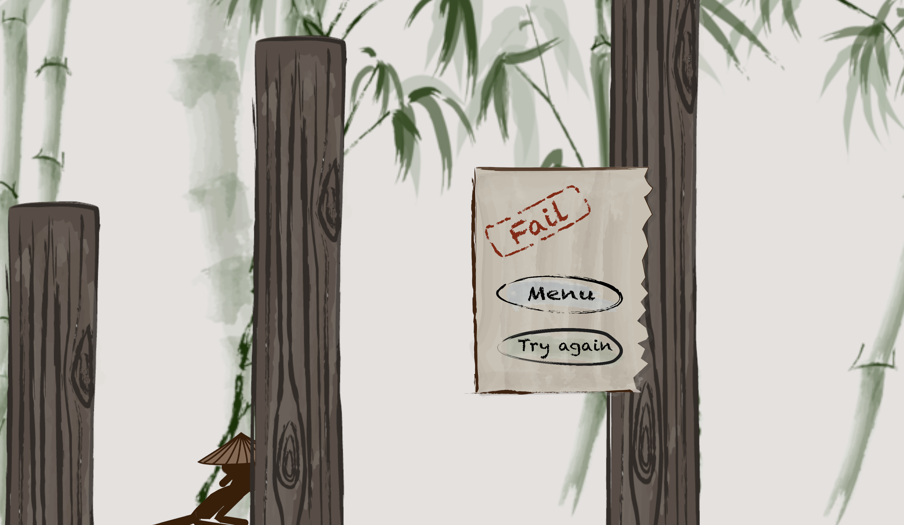
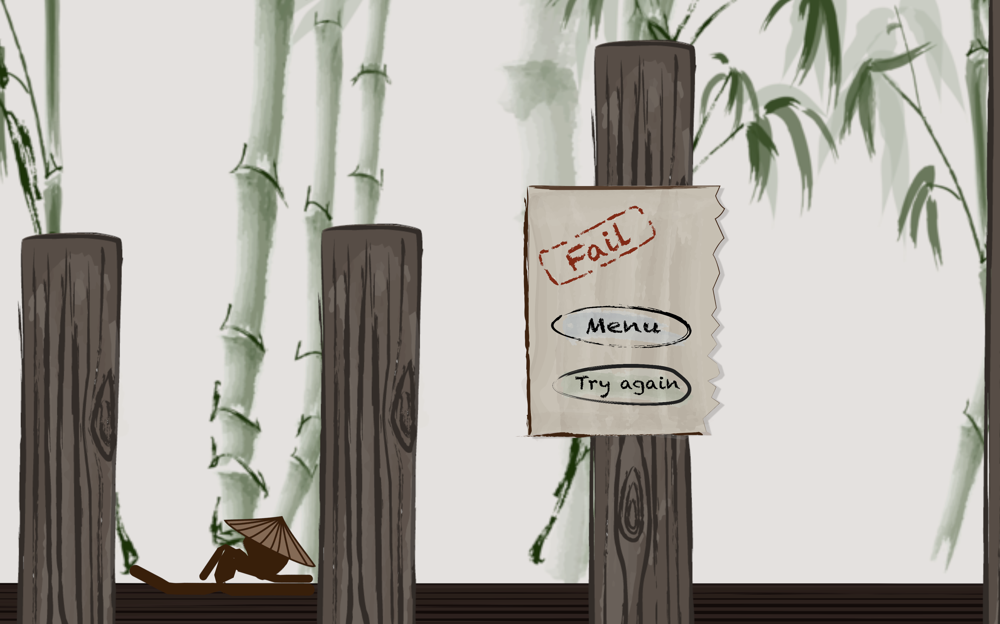
Grey
True to its name, Grey is an interactive storytelling game wrapped in a deeply somber, ambiguous tone. The game challenges players to solve a haunting murder mystery where the victim is the main character herself. Navigating through a fractured timeline, players control a ghost to gather clues and piece together the fragmented truth.
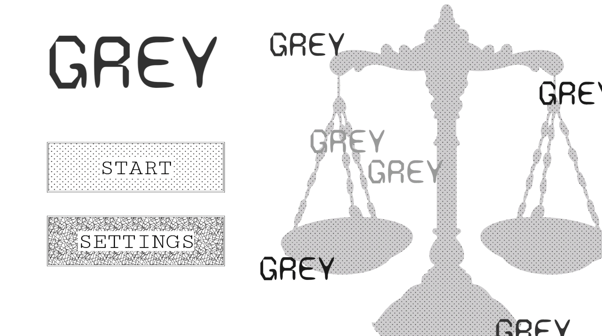
Throughout this investigative journey, players exercise active agency through choices—many of which are intentionally misleading. The game's multi-ending structure reinforces its overarching thematic grayness, forcing the audience to ask: Is the justice you believe in really the truth? Even when a seemingly happy ending is achieved, the reality remains unsettling: can a story truly end happily when the protagonist is already a ghost?
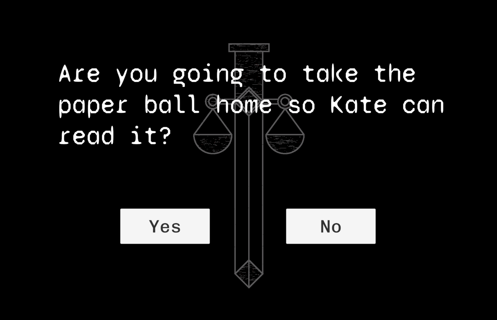
Grey deliberately tackles brutal real-life issues, including domestic violence, sexual harassment, alcoholism, and revenge. By presenting these heavy themes through a minimalist, flat 2D visual style, the narrative becomes more accessible, drawing players in before the final revelation hits with full, devastating force. Ultimately, this project serves as an investigation into how games as a medium can reshape the observer's experience. How does interactive agency differ from passive observation, and how is the line between digital choices and our own reality slowly beginning to blend?
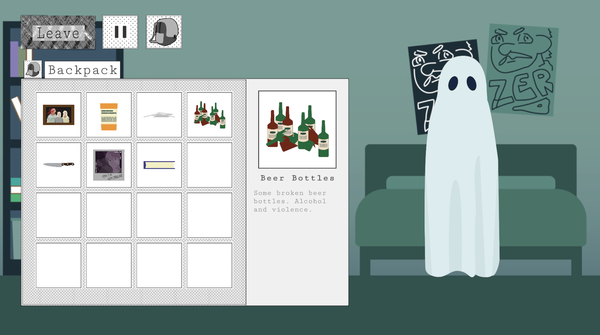
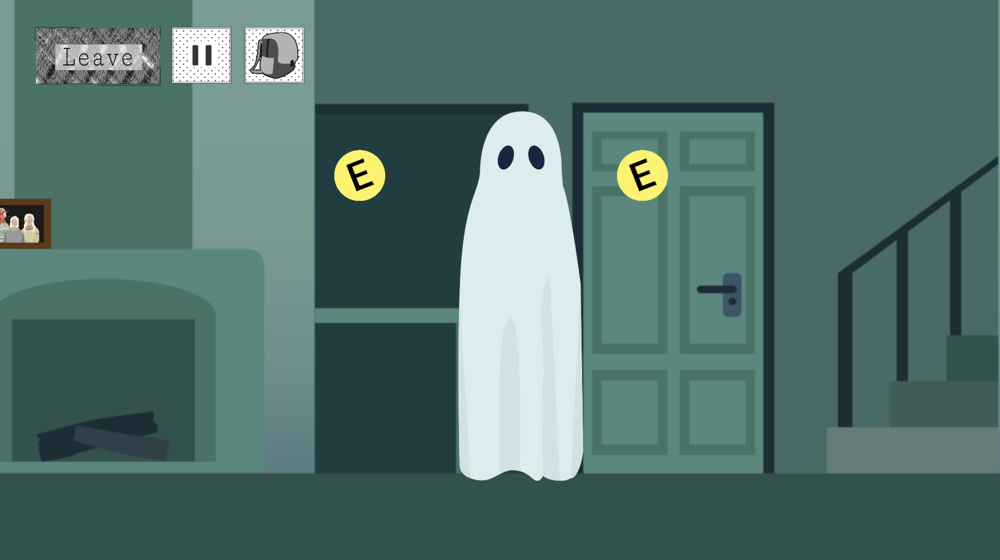
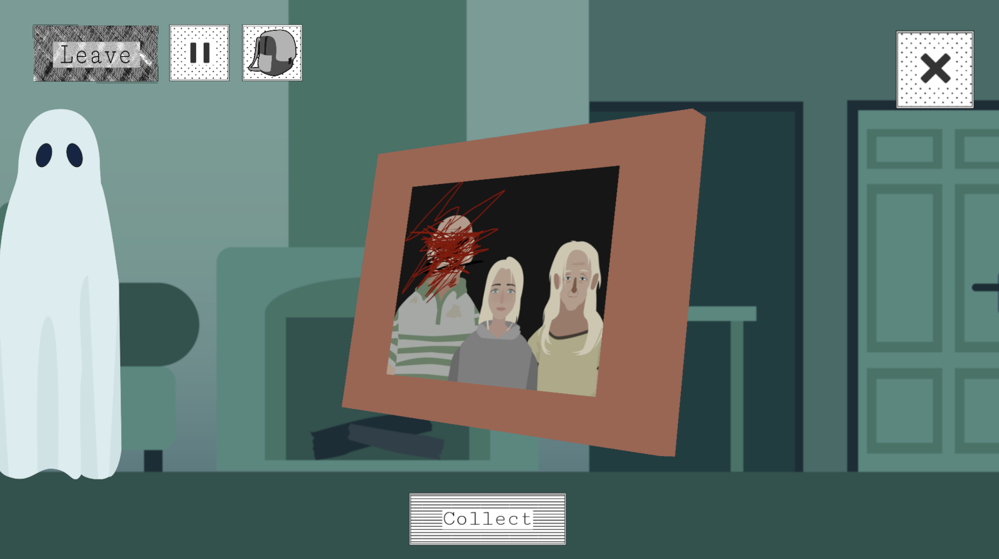
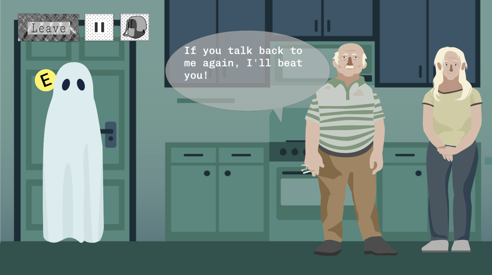
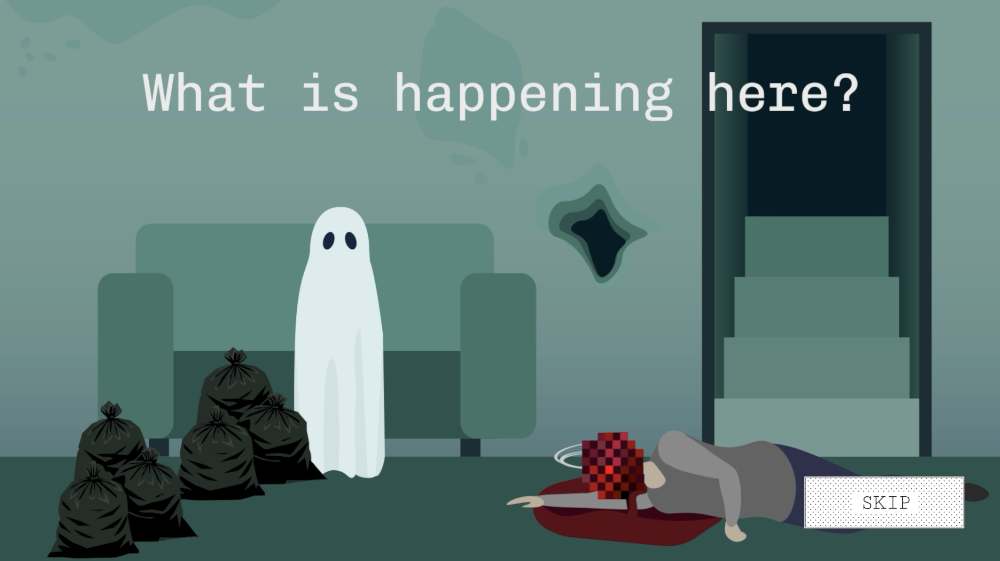
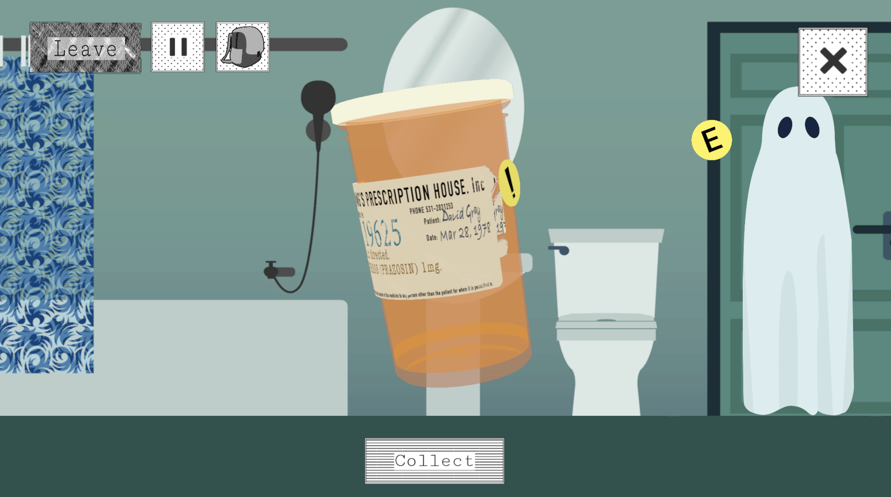
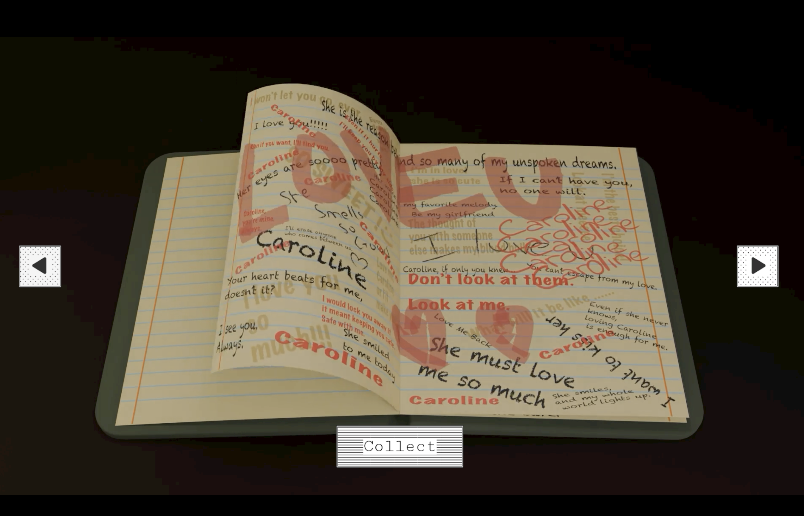
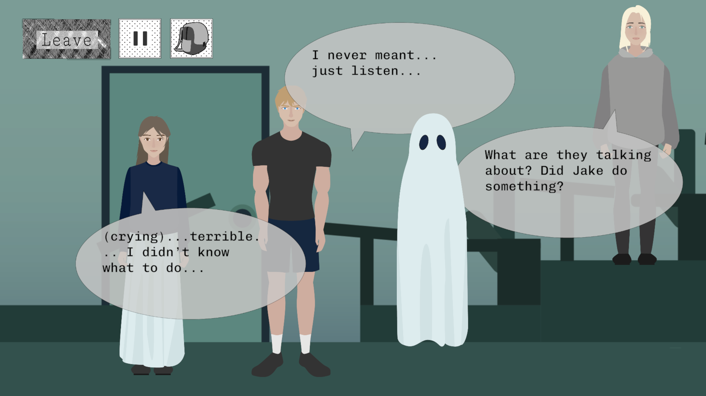